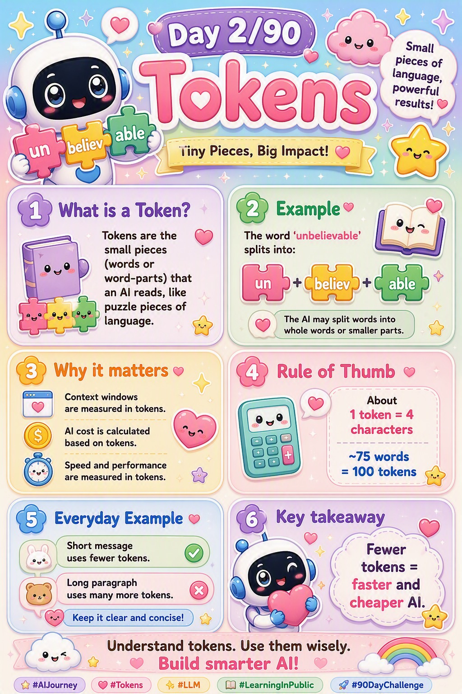

📜 The 30-second brief
A token is the small chunk of text a language model actually reads and writes. It is not
a whole word and not a single letter — it sits somewhere in between. Roughly, a token is a
common piece of a word: learn, ing, !, a space, or a
short whole word like love.
Here is the mindset shift: the model never sees your text as words. It sees a stream of numbered tokens. Every limit, every price, every "why did it forget?" — almost all of it traces back to this one idea. Understand tokens, and half of how AI behaves suddenly makes sense.
💌 A fresh analogy: syllables on a taxi meter
Think of how you naturally clap out a word into syllables — "un-be-liev-a-ble." You don't say the whole word in one burst; your mouth breaks it into beats. Tokens are the model's syllables: the natural beats it uses to read and speak.
Now add a twist: imagine every one of those beats ticks a taxi meter. The longer the ride (the more tokens), the higher the fare and the longer the trip. That is exactly how AI works — you pay per token and you wait per token. Short, clear text is a cheap, fast ride; rambling text is a long, expensive one.
The lesson: tokens are both the rhythm the model reads in and the currency you spend. Every word you send is a beat on the meter.
⚙️ How text becomes tokens (and back)
The step that turns your text into tokens is called tokenization. It happens before the model does any "thinking":
- Your text is scanned and split into known pieces using a fixed vocabulary the model learned once, during training.
- Each piece is swapped for a number (an ID) — the model only ever does math on numbers, never on letters.
- The model processes those numbers and predicts the next token's number.
- That number is turned back into text — this reverse step is detokenization — and you see a word appear.
Common words are usually a single token; rare or long words get split into several. This is why
cat is one token but tokenization might be three.
🧩 The numbers worth memorising
| Rule of thumb | What it means |
|---|---|
| 1 token ≈ 4 characters | In typical English text. |
| 1 token ≈ ¾ of a word | So 100 tokens ≈ 75 words. |
| 1 page ≈ 500 tokens | A rough feel for documents. |
| Spaces & punctuation count | A leading space is usually part of the token. |
These are estimates, not laws — different models tokenize slightly differently — but they are accurate enough to plan prompts, budgets, and document sizes.
💡 Why tokens quietly control everything
- Cost. APIs bill per token — both what you send (input) and what you get back (output). Wordier prompts are literally more expensive.
- Speed. The model generates one token at a time, so longer answers take proportionally longer to appear.
- Context limits. A model's "memory" (the context window — Note 3) is measured in tokens, not words. Run out of tokens and the oldest text drops off.
- Truncation. If your input plus the requested output exceeds the limit, something gets cut — usually silently.
- Multilingual cost. The same sentence in some non-English languages can take 2–3× more tokens, making it slower and pricier.
🏭 Worked example: counting a real message
Take the sentence: I love learning AI!
| Token | Note |
|---|---|
| I | short whole word → 1 token |
| (space)love | the leading space rides with the word |
| (space)learning | common word → often 1 token |
| (space)AI | 1 token |
| ! | punctuation → its own token |
That's roughly 5 tokens for 4 words — a good reminder that the token count is usually a bit higher than the word count, not lower.
🔒 Things no textbook tells you (off-the-record notes)
- The model can't truly "spell." Because it sees tokens, not letters, it struggles with tasks like "count the r's in strawberry" — the letters are hidden inside chunks.
- Numbers get chopped weirdly. A number like
12345may split into odd pieces, which is one reason models fumble exact arithmetic. - A trailing space changes everything.
"love"and" love"can be different tokens, subtly affecting the output. - Emojis and rare symbols are token-hungry. A single emoji can cost several tokens.
- "Max tokens" is output-only. That setting caps the reply length; it does not include your input — a very common billing surprise.
- Repetition is cheap to read, not to write. Long inputs are processed fast in parallel; long outputs are slow because each token waits for the one before it.
⚠️ Common pitfalls & misconceptions
- "One word = one token." False — long words split into several.
- "Tokens are letters." False — they're sub-word chunks, bigger than letters.
- "Only my input costs tokens." False — the model's reply is billed too.
- "Word count ≈ token count." Close, but tokens usually run ~30% higher.
- "Whitespace is free." False — spaces and newlines are part of tokens.
🎓 Quick self-test (exam-style)
- What is a token?
A sub-word chunk of text — the unit a model reads and writes. - Roughly how many words are 100 tokens?
About 75 words. - Why can't models reliably count letters in a word?
They see tokens (chunks), not individual letters. - Does the model's reply cost tokens too?
Yes — both input and output are counted. - What is tokenization?
The step that splits text into tokens and maps each to a number before processing. - Why does the same sentence cost more in some languages?
It breaks into more tokens than the English equivalent.
📚 Key terms to carry forward
- Token — a sub-word chunk of text.
- Tokenization — splitting text into tokens and mapping them to numbers.
- Vocabulary — the fixed set of tokens a model knows.
- Token ID — the number that stands for each token.
- Input / output tokens — what you send vs. what the model generates (both billed).
- Context window — the total token budget the model can hold at once (our Note 3).
⚡ 60-second flashcard (last look before the exam)
| Define it in one breath | A token is a sub-word chunk — the unit an AI reads and writes. |
| The mental model | Tokens are the model's syllables — and a taxi meter you pay per beat. |
| Numbers to memorise | 1 token ≈ 4 characters ≈ ¾ word · 100 tokens ≈ 75 words. |
| Word ≠ token | Common words = 1 token; long/rare words split into several. |
| What costs money | Both input and output tokens are billed. |
| What costs time | Output is generated one token at a time → longer replies are slower. |
| The spelling quirk | Models can't reliably count letters — they see chunks, not letters. |
| The billing trap | "Max tokens" limits the reply only, not your input. |
| Language cost | Non-English text can take 2–3× more tokens. |
| Connects to | Context window (Note 3) is measured in tokens. |
🖼️ Today's cheat sheet
The same image shared on the LinkedIn post for Note 2.

✨ Next spark
Now that you know AI reads in tokens, the next question is: how many can it hold at once? Note 3 — the Context Window — is the AI's little writing desk, measured entirely in tokens.